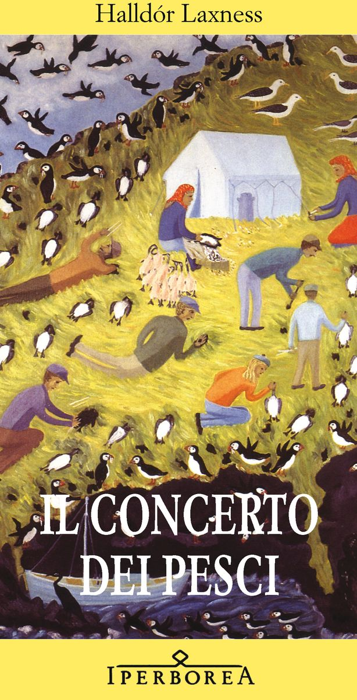

5:01 · 1 OPERA
Anne Carson: recipient of the 2026 Nobel Prize in Literature.
Il filo del discorso
Il contributo ripropone una breve intervista in inglese ad Anne Carson dopo l’annuncio del premio indicato nel titolo del video. Le risposte, spesso concise e ironiche, toccano la sorpresa per la notizia, il rapporto fra riconoscimento pubblico e scrittura e l’incertezza su come i lettori incontrino un’opera. Il dialogo si sposta poi sulla comunità poetica islandese e sulle letture di Halldór Laxness: Carson nomina The Fish Can Sing, pubblicato in italiano come Il concerto dei pesci. La riflessione sulla lingua distingue l’esperienza del testo originale da quella che passa attraverso una traduzione, affidata alla competenza del traduttore. Nell’ultima parte la domanda sul ruolo della poesia riceve una risposta legata alla brevità e ai ritmi del presente. Non vengono citati titoli di opere di Carson.
I libri nel discorso

Il concerto dei pesci
Copertina: Iperborea
Il titolo inglese The Fish Can Sing compare a 2:53, dopo la domanda su Laxness. Il titolo italiano è riscontrato presso Iperborea; non è nominato un libro di Anne Carson.
Passaggio 2:53 ↗ · Fonti e libro ↗